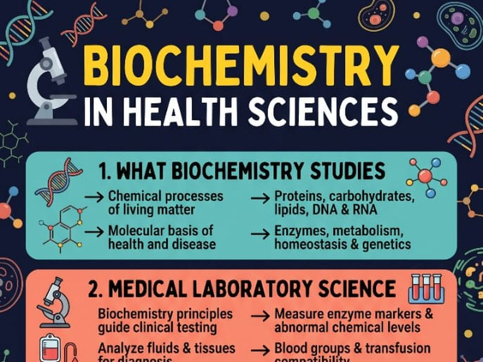

Biochemistry in Health Sciences
A one-page visual guide that links biochemistry to six health fields, from medical laboratory science to nutrition and dietetics.
- What biochemistry studies: proteins, carbohydrates, lipids, DNA and RNA
- How it supports lab testing, physiotherapy, nursing and radiography
- Links to environmental health and to nutrition and dietetics
- Study guide
- Infographic
- AI-assisted
This is a demo link. The practice quiz page will be added here once it is hosted.